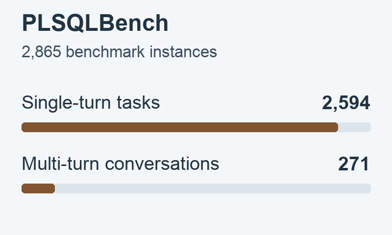

EMNLP 2026 Industry Track, pp. 2625–2646
PLSQLBench
Benchmarking LLM Systems for Executable Procedural Database Programming
* Equal contribution
Can a model revise a working procedure?
A user asks for a procedure that reports the best-selling products. Next they ask for a date filter, then a warning for low stock. The final procedure must still rank the products correctly while respecting the date range and handling inventory.
We built a benchmark that compiles and runs generated PL/SQL. Tests check the program’s behavior after each request, making it possible to see when a revision breaks an earlier requirement. The benchmark includes 2,594 single-turn tasks and 271 conversations spanning 978 turns.
Results
Across eight language models, common errors included referencing the wrong schema objects, mishandling exceptions, and losing earlier requirements during a revision. Giving models access to database tools improved performance on several tasks that required knowledge of the schema.
